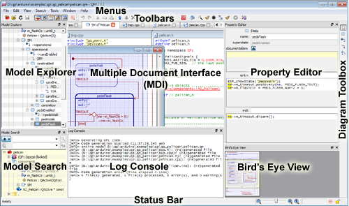

Overview
The QM™ user interface consist of dock windows and toolbars that surround the Multiple Document Interface (MDI) area in the center. Dock windows and toolbars can be docked to the edges of the MDI area or floated as independent windows.

QM™ Graphical User Interface
- Note
- QM™ remembers the last used layout of all dock windows and toolbars and restores them next time the application is run.
The main elements of the QM™ graphical user interface are as follows:
- Model-View-Controller explains the Model-View-Controller architecture underlying the QM modeling tool.
- Working with Dock Windows shows how to adjust the Dock Windows and Toolbars to best suit your screen layout (including using multiple monitors). Also, you will see how to show and hide Dock Windows and Toolbars.
- Multiple Document Interface shows diagrams and file-templates as separate windows. These windows can be either overlapping (in the Subwindows View) or tabbed (in the Tabs View);
- QM Model File shows how QM stores the abstract Model between sessions.
- QM Session File explains how QM stores the graphical layout and model-specific information (such as external tools and license type) between sessions.
- QM License Certificate File explains what QM license certificate file is, what it enables, and how to obtain it.
- Current Item explains the important concept of the Current Item
- Model Explorer dock window shows all QM™ model items in a hierarchical tree view. This is the most holistic view of the model;
- Model Search dock window shows search box and another hierarchical tree view of the model, which allows you to select the model item for searching. This second tree view can be also useful for user-selected view of items that does not follow the Current Item;
- Property Editor dock window shows properties associated with Current Item and allows you to edit these properties;
- Diagram Toolbox contains the tools for creating new items specific to the current diagram type;
- Bird's Eye View shows a zoomed-out view of the current diagram;
- Log Console shows the information from code generation, external tool execution, and specific information about selected model elements (such as all triggers handled by a given state);
- Menus provide access to all commands;
- Toolbars provide quick access to the frequently used commands;
- Status Bar provides status information, quick help, and zoom slider;
- New Model Dialog Box is used to create a new model;
- Manage Tools Dialog Box is used to configure external tools that you can integrate with QM™
- Code Generation License Dialog Box is used to choose the code generation license
Additionally customizing the fonts and colors in QM™ is covered in the section:
Next: Model-View-Controller